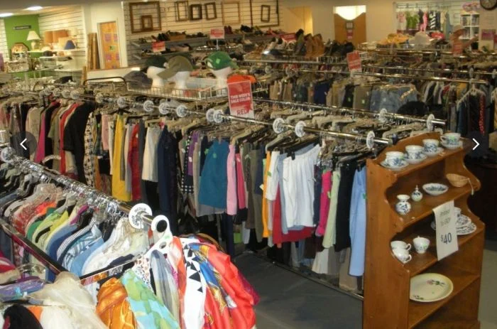

☰

We’ve been told we’re too online to vote. That’s why we will.
$80 from reselling shoes kept my phone on last month.
My thrift store fit made someone think I was rich.
I started dropshipping and now do school from wherever Wi-Fi hits.
The algorithm knows I’m bisexual before I even did.

We’ve been told we’re too online to vote. That’s why we will. This article explores how digital activism is turning Gen Z into a real political force — fast.
By Samir D. · 🧠 Culture
We publish bold teen writers. And we pay.
Write for Us — and Get Paid